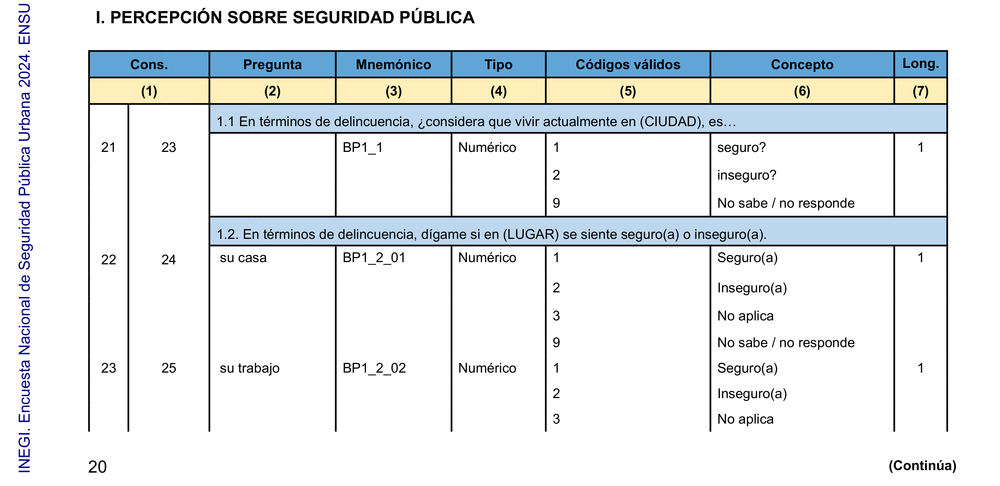
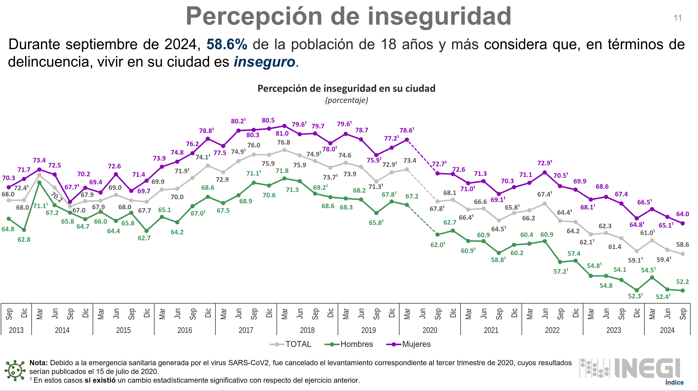

La Encuesta Nacional de Seguridad Pública Urbana (ENSU) 2024 es un proyecto estadístico destinado para enriquecer la oferta de información de interés nacional vinculada al Subsistema Nacional de Información de Gobierno, Seguridad Pública e Impartición de Justicia.
La encuesta se llevó a cabo con la finalidad de obtener información que permita realizar estimaciones sobre la percepción de la población acerca de la seguridad pública en su ciudad, tanto a nivel nacional como en cada una de las áreas urbanas (ciudades) de interés.
Para mayor información y descarga de datos, cuestionarios, etcétera visite el enlace: ENSU
Installing package into '/home/isaias/R/x86_64-pc-linux-gnu-library/4.4'
(as 'lib' is unspecified)
Warning: package 'kable' is not available for this version of R
A version of this package for your version of R might be available elsewhere,
see the ideas at
https://cran.r-project.org/doc/manuals/r-patched/R-admin.html#Installing-packages
Warning: 'BiocManager' not available. Could not check Bioconductor.
Please use `install.packages('BiocManager')` and then retry.
Warning in p_install(package, character.only = TRUE, ...):
Warning in library(package, lib.loc = lib.loc, character.only = TRUE,
logical.return = TRUE, : there is no package called 'kable'
Warning in pacman::p_load(kable, readr, tidyr, dplyr, janitor, srvyr, here): Failed to install/load:
kable
# Hay problemas con UPM únicas, en mi caso decido removerlas, pero hay otros métodosoptions(survey.lonely.psu="remove")# Crear un objeto que guarde el diseño muestral.dis_m <- ensu |>as_survey_design(ids = upm,strata=est_dis,weights= fac_sel)
Comencemos a Calcular un Tabulado.

Con esta pregunta se puede calcular la percepción de seguridad de las personas en cuánto a la Ciudad
# Cálculo de la estimación para percepción de seguridaddis_m |>summarise( percepcion =survey_mean (bp1_1_dis, vartype =c("cv", "ci"), level=0.9, # El diseño muestral está definido al 90 % de confianzaproportion = T) ) |> knitr::kable()
percepcion
percepcion_cv
percepcion_low
percepcion_upp
0.5863314
0.0075711
0.5790098
0.5936151
Agreguemos la variable Sexo
# Cálculo de la estimación para percepción de seguridaddis_m |>group_by(sexo) |>summarise( percepcion =survey_mean (bp1_1_dis, vartype =c("cv", "ci"), level=0.9, # El diseño muestral está definido al 90 % de confianzaproportion = T) ) |> knitr::kable()
sexo
percepcion
percepcion_cv
percepcion_low
percepcion_upp
Hombres
0.5223602
0.0129891
0.5111883
0.5335097
Mujeres
0.6398314
0.0089746
0.6303313
0.6492232
En la imagen se pueden contrastar los resultados por sexo.

Gráfica del reporte de INEGI, tercer trimestre ENSU.
Ahora por Ciudad, Top 15 Ciudades en las que se sienten seguras
# Por ciudad dis_m |>group_by( nom_ent, nom_cd) |>summarise( perc_ciudad =survey_mean(bp1_1_dis, name ='perc_ciudad',vartype =c("cv", "ci"), level=0.9,proportion = T) ) |>select(nom_ent, nom_cd, perc_ciudad) |>arrange(perc_ciudad) |>head(15) |> knitr::kable(caption ="Top 15 de Ciudades con mejor percepción de seguridad")
Top 15 de Ciudades con mejor percepción de seguridad
nom_ent
nom_cd
perc_ciudad
NUEVO LEON
SAN PEDRO GARZA GARCIA
0.1369015
CIUDAD DE MEXICO
BENITO JUAREZ
0.1753425
TAMAULIPAS
TAMPICO
0.1925714
COAHUILA DE ZARAGOZA
PIEDRAS NEGRAS
0.2022170
JALISCO
PUERTO VALLARTA
0.2126129
COAHUILA DE ZARAGOZA
SALTILLO
0.2167097
BAJA CALIFORNIA SUR
LOS CABOS
0.2289039
SINALOA
LOS MOCHIS
0.2345692
NAYARIT
TEPIC
0.2369827
YUCATAN
MERIDA
0.2460187
BAJA CALIFORNIA SUR
LA PAZ
0.2590390
NUEVO LEON
SAN NICOLAS DE LOS GARZA
0.2857975
COAHUILA DE ZARAGOZA
LA LAGUNA
0.3081418
CIUDAD DE MEXICO
CUAJIMALPA DE MORELOS
0.3157562
VERACRUZ DE IGNACIO DE LA LLAVE
TAMPICO
0.3251895
Ahora por Ciudad, Top 15 Ciudades en las que se sienten inseguras
# Por ciudad dis_m |>group_by(nom_ent, nom_cd) |>summarise( perc_ciudad =survey_mean(bp1_1_dis, name ='perc_ciudad',vartype =c("cv", "ci"), level=0.9,proportion = T) ) |>select(nom_ent,nom_cd, perc_ciudad) |>arrange(-perc_ciudad) |>head(15) |> knitr::kable(caption ="Top 15 de Ciudades con menor percepción de seguridad")
Top 15 de Ciudades con menor percepción de seguridad